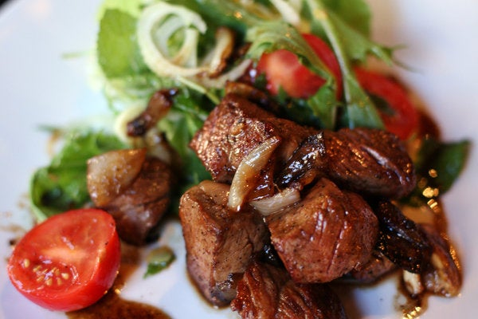

Bo Luc Lac Recipe

This is one of the dishes that must be ordered when
visiting a Vietnamese restaurant. Dare I say I order
this much more often then Pho! I found this great recipe
from The New York Times-Cooking, created by
Michael Huynh. Enjoy!
Ingredients
- 2 pounds boneless beef sirloin, fillet, or rib
eye, cut into 1-inch cubes
- 10 garlic cloves, minced
- 1 tablespoon Maggi seasoning or soy sauce
- 1 tablespoon sugar
- 1 teaspoon sea salt
- Freshly ground black pepper